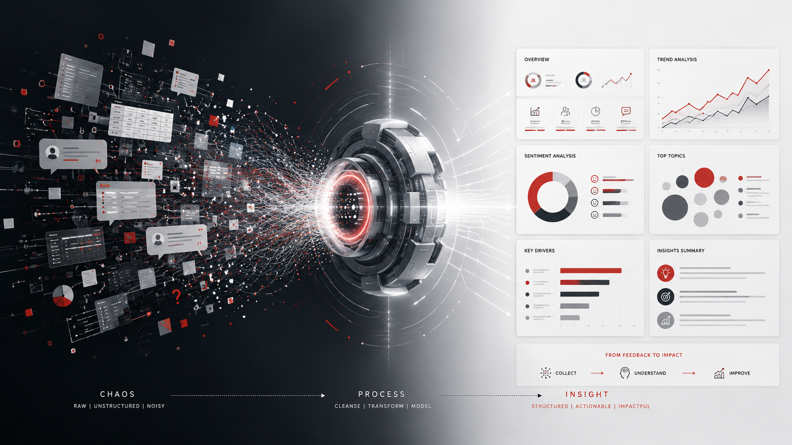
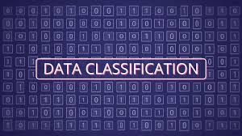
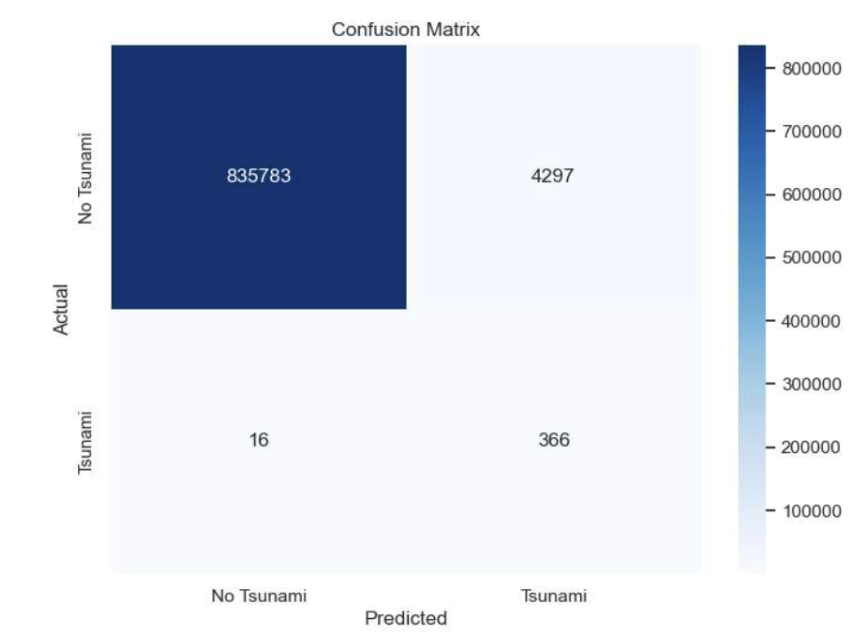
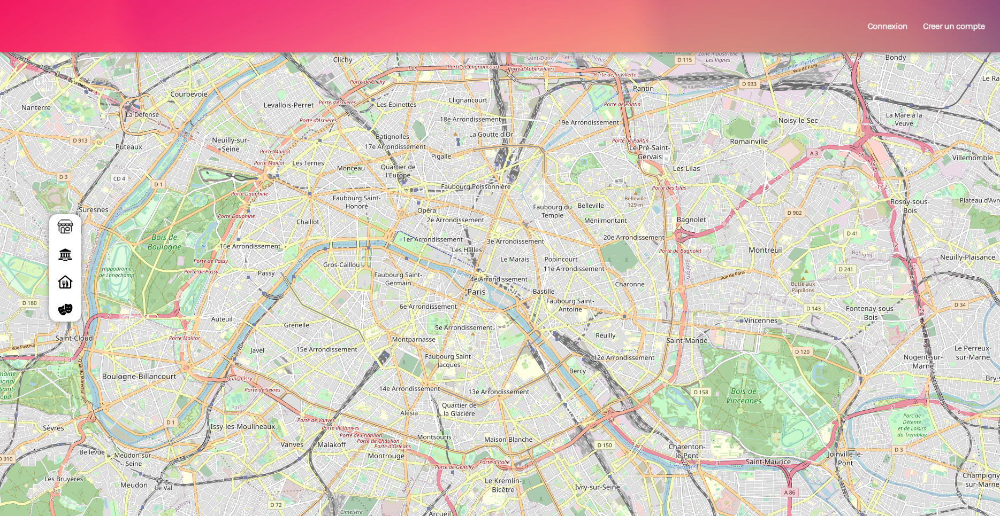

Problème avant modèle
Comprendre le besoin, les contraintes et les critères de succès avant de choisir une méthode.
Data Scientist · Data Analyst · NLP
Je conçois des pipelines NLP, des modèles de machine learning et des analyses capables de convertir des données complexes en résultats compréhensibles et actionnables.
Quentin Wendling
Data Scientist & Data Analyst
01 — À propos
Étudiant en Master 2 Informatique, parcours Données, Connaissances et Intelligence à l'Université Paris Cité, je travaille sur des problématiques de machine learning, de NLP et d'aide à la décision.
Mon approche couvre toute la chaîne de valeur : structuration des données, expérimentation, entraînement, évaluation, déploiement et restitution des résultats auprès des équipes métier.
Comprendre le besoin, les contraintes et les critères de succès avant de choisir une méthode.
Privilégier des analyses compréhensibles, mesurables et utilisables par les décideurs.
Construire des workflows robustes, reproductibles et maintenables au-delà du prototype.
02 — Expérience
Société Générale Assurances · La Défense
Développement d'un pipeline NLP de bout en bout pour automatiser l'analyse des évaluations de formation et produire des insights métier.
Groupe Conseil Filion · Québec, Canada
Analyse et optimisation des flux d'une chaîne de production industrielle grâce à la simulation et à des algorithmes d'IA.
LIPADE · Paris
Traitement de données issues d'images médicales et migration d'une application vers un backend Python sécurisé.
03 — Projets sélectionnés

NLP · Projet professionnel
Pipeline automatisé pour regrouper, interpréter et classifier des commentaires de formation, de la préparation des données jusqu'au rapport d'insights.

NLP · Projet académique
Comparaison structurée de modèles classiques et d'un modèle Transformer français pour mesurer le gain de performance et ses compromis.

Machine Learning · Projet académique
Analyse de données sismiques, préparation des variables et entraînement de modèles pour estimer le risque de tsunami.

Data Analysis · Projet académique
Étude statistique sous R pour analyser la performance, les tendances et la contribution du tir à trois points.
Optimisation · Projet professionnel
Modélisation d'une chaîne de production pour tester des scénarios, identifier les contraintes et améliorer la prise de décision.

Développement web · Projet académique
Application web full-stack permettant aux utilisateurs de créer un compte, se connecter et partager des informations sur une carte interactive.
04 — Compétences
Préparation, modélisation, évaluation et interprétation.
Classification, clustering, embeddings et génération de labels.
APIs, bases de données et pipelines applicatifs.
Exploration visuelle, dashboards et collaboration.
05 — Formation
Université Paris Cité · M2 : 14,03/20
UQAC, Canada · L3 : 3,27/4,3 · codiplomation avec Université Paris Cité
Université Paris Cité · IUT Paris — Rives de Seine
06 — Contact
Échangeons autour de vos besoins, d'une opportunité ou d'une collaboration.